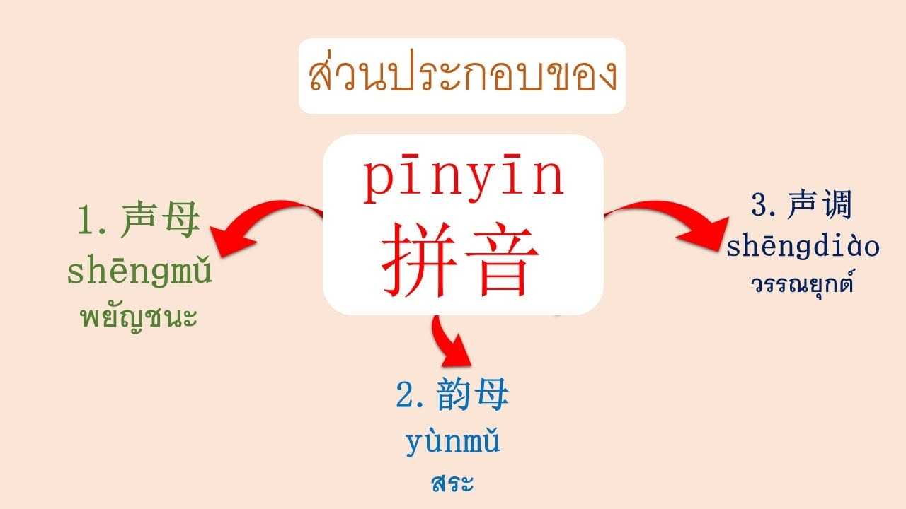

พินอิน (Pinyin)
พินอิน 拼音 (Pīnyīn)
“พินอิน” (拼音) คือ ระบบการเทียบเสียงในภาษาจีนกลาง (普通话) ที่ยืมตัวอักษรโรมันมาใช้ในการช่วยออกเสียงตัวอักษรจีน เพื่อให้ผู้เรียนภาษาจีนสามารถออกเสียงตัวอักษรจีนได้ง่ายขึ้น เนื่องจากอักษรจีนเป็นอักษรภาพ ไม่มีสระ และวรรณยุกต์ ทำให้การจำเสียงอ่านแต่ละตัวนั้นยากสำหรับผู้ที่เริ่มเรียน แม้กระทั่งคนจีนเองก็ต้องเริ่มเรียนภาษาจีนจากพินอินก่อนจะไปเรียนอักษรจีนด้วยเช่นกัน โดยพินอินจะอิงการออกเสียงจากภาษาจีนกลางเป็นมาตรฐานซึ่งแตกต่างไปจากการออกเสียงในภาษาอังกฤษ พินอินประกอบไปด้วย 3 ส่วน ที่ใช้ในการออกเสียง ดังนี้
เสียงพยัญชนะ มีทั้งหมด 23 เสียง
เสียงสระ มีทั้งหมด 36 เสียง
เสียงวรรณยุกต์ มีทั้งหมด 5 เสียง 4 รูป
องค์ประกอบของพินอิน
พยัญชนะต้น (声母 - Shēngmǔ): มีทั้งหมด 21 หรือ 23 เสียง (ตามวิธีนับ) เช่น b, p, m, f ทำหน้าที่เป็นเสียงพยัญชนะแรกของพยางค์
สระ (韵母 - Yùnmǔ): มีทั้งหมด 36 เสียง แบ่งเป็นสระเดี่ยว (เช่น a, o, e, i, u, ü) และสระผสม (เช่น ai, ao, an) ทำหน้าที่เป็นเสียงหลักของพยางค์
เสียงวรรณยุกต์ (声调 - Shēngdiào): มี 4 เสียงหลัก (เสียง 1 ¯, เสียง 2 ˊ, เสียง 3 ˇ, เสียง 4 ˋ) และเสียงเบาอีก 1 เสียง ช่วยกำหนดความหมายของคำ